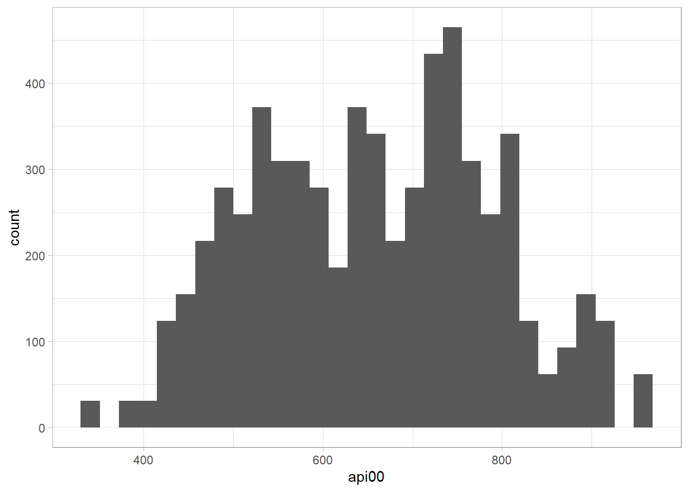
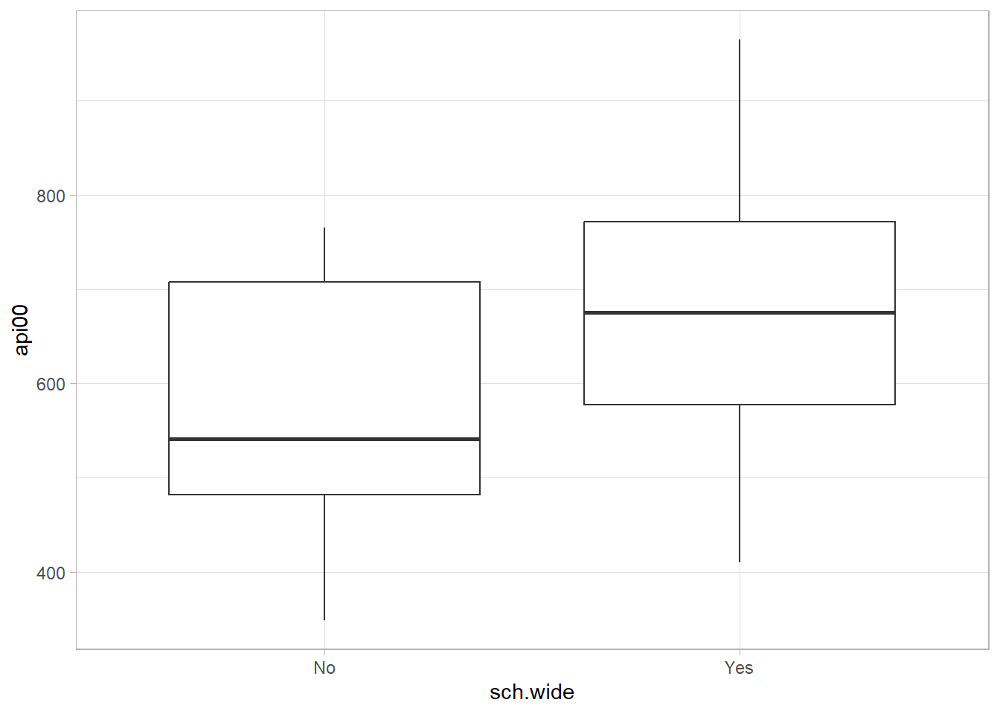

library(tidyverse)
library(scales)
library(janitor)
library(survey)
library(srvyr)
library(gtsummary)6 Statistical Testing
6.1 Statistical Tests
Start with univariate analyses. Plot distributions for the continuous variables. Get in the habit of weighting outcomes even though it has no effect in SRS.
apisrs_des |>
ggplot(aes(x = api00)) + geom_histogram(aes(weight = pw))

apisrs_des |>
ggplot(aes(x = sch.wide, y = api00)) +
geom_boxplot(aes(weight = pw))

The srvyr::summarize()function automatically creates standard errors and confidence intervals using the weights from the design object. The formulas are simple with SRS, so you could calculate them this yourself. gtsummary has limited support for tables.
apisrs_des |>
summarize(
.by = sch.wide,
api00 = survey_mean(api00, vartype = c("se", "ci", "cv", "var"))
) |>
knitr::kable()| sch.wide | api00 | api00_se | api00_low | api00_upp | api00_cv | api00_var |
|---|---|---|---|---|---|---|
| No | 574.0000 | 19.892932 | 534.7720 | 613.2280 | 0.0346567 | 395.72874 |
| Yes | 675.3313 | 9.853077 | 655.9014 | 694.7611 | 0.0145900 | 97.08312 |
apisrs |>
summarize(
.by = sch.wide,
M = mean(api00),
s = sd(api00),
n = n(),
se = s*sqrt(1 - n / 6194)/sqrt(n),
t = qt(.975, n-1, FALSE),
ci_025 = M - se * t,
ci_975 = M + se * t,
cv = se / M
) |>
knitr::kable()| sch.wide | M | s | n | se | t | ci_025 | ci_975 | cv |
|---|---|---|---|---|---|---|---|---|
| No | 574.0000 | 124.3907 | 37 | 20.388541 | 2.028094 | 532.6501 | 615.3499 | 0.0355201 |
| Yes | 675.3313 | 127.9501 | 163 | 9.889082 | 1.974716 | 655.8032 | 694.8594 | 0.0146433 |
apisrs_des |>
gtsummary::tbl_svysummary(
by = sch.wide,
statistic = list(all_continuous() ~ "{mean} ({p25}, {p75}), {mean.std.error}"),
include = "api00"
) |>
gtsummary::add_ci()Characteristic |
No |
95% CI 2 |
Yes |
95% CI 2 |
|---|---|---|---|---|
| api00 | 574 (482, 708), 20 | 535, 613 | 675 (577, 772), 10 | 656, 695 |
| 1
Mean (Q1, Q3), SE |
||||
| 2
CI = Confidence Interval |
||||
Example
Data set apisrs is a simple random sample of the Academic Performance Index (API) of n = 200 of the N = 6,194 schools in California.
All survey objects require that you specify the columns identifying the clusters from largest to smallest level. In simple random designs like this, there are no clusters, and you specify just the constant id = ~1. The fpc parameter specifies the column with the finite population correction. In a simple random sample, it equals N. The fpc functions to both adjust the variance estimate, and to set the observation weights.
srs_design <- svydesign(id = ~1, fpc = ~fpc, data = apisrs)\(\hat{T}_X\), \(\mathrm{var} [\hat{T}_X]\), \(\hat{\mu}_X\), and \(\hat{\mathrm{var}}[\hat{\mu}_X]\) are
svytotal(~enroll, srs_design)
## total SE
## enroll 3621074 169520
svymean(~enroll, srs_design)
## mean SE
## enroll 584.61 27.368When the sample is much smaller than the population, the finite population correction makes little difference. You can omit the fpc parameter, but then you must supply the samplying weight instead. In this case, the sampling weight is 200/6194, and is in variable pw. The total and mean are unchanged, but the variance increases a little without the correction.
srs_design2 <- svydesign(id = ~1, weights = ~pw, data = apisrs)
svytotal(~enroll, srs_design2)
## total SE
## enroll 3621074 172325
svymean(~enroll, srs_design2)
## mean SE
## enroll 584.61 27.821